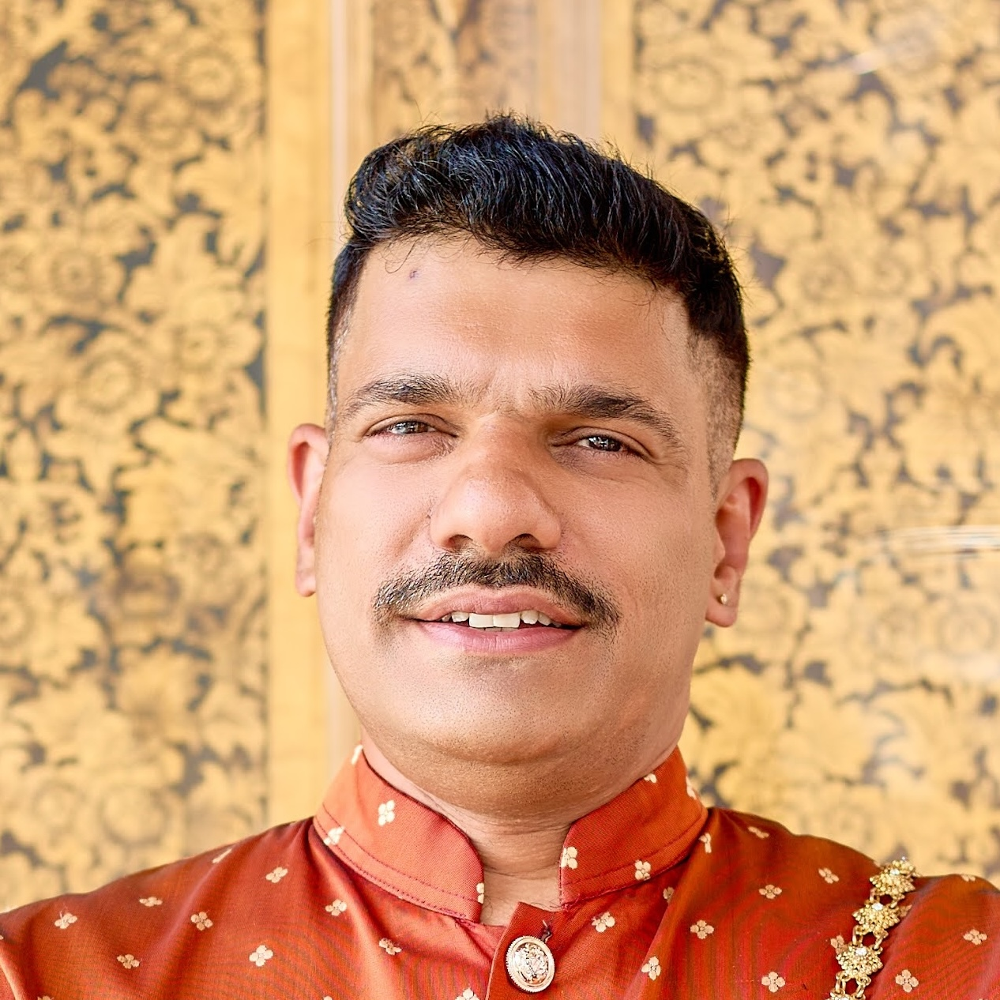

Team Leader & Senior Software Engineer
A multi-domain software engineer and team leader with 18+ years of experience in healthcare IT and geospatial systems. Specialising in telehealth platforms, mobile health applications, AI-assisted clinical tools, interoperable health systems, and UAV-based drone imagery analysis. Author of multiple award-winning health applications actively used in hospitals and communities across Australia.
Background
I have spent 16+ years at CSIRO's Australian e-Health Research Centre (AEHRC) building software that makes a real difference to patients in remote and underserved communities. My work ranges from the architecture of cloud-deployed telehealth systems serving 10+ sites across Australia, to hands-on development of iOS/Android clinical imaging apps holding 60,000+ patient records, to leading teams through grant-funded AI research projects.
Alongside my industry role, I hold a Master of Philosophy from Curtin University (2026) researching UAV-based remote sensing, vegetation index analysis, and deep learning for crop disease phenotyping — resulting in LiteMyMap, a cloud-based geospatial AI inference platform that integrates AI models with QGIS and web-based GIS workflows.
Technical Expertise
Career
Conducted in parallel with my CSIRO role, funded by the Australian Government Research Training Program (RTP) Scholarship. Designed and built an open-source cloud inference platform for deep learning on UAV orthomosaics.
Led multiple research software teams — Tele-Health Solutions (2019–2022), Insights (2022–2023), and Indigenous Research (2023–present). Responsible for line management, performance reviews, stakeholder engagement, and grant assessment. CSIRO Staff Association Delegate since 2024.
End-to-end patient record access system co-designed with Aboriginal corporations in the Pilbara region using Django, HAPI FHIR, Microsoft EntraID in Azure ecosystem.
Creator and lead developer of CSIRO's flagship telehealth screening system, deployed to rural and metro clinics and optometrists across Queensland, Northern Australia, and Royal Perth Hospital's REACH Clinic — via combination of Terraform, AWS Elastic Beanstalk and private servers.
Lead developer of iOS/Android clinical image capture apps (Ionic Framework) distributed via Apple Business Manager and Google Play. Django backend on WA Health infrastructure.
Ionic/TypeScript mobile app for remote dental image capture and data synchronisation. Also explored Microsoft Power Automate and PowerApps for no-code image capture via SharePoint, synced with the Remote-I dental backend.
Created and lead developer of a multi-purpose DICOM and colour image annotation tool (Django / d3.js), applied to dental caries X-ray detection, diabetic foot ulcer segmentation, and wrist X-ray analysis. Supervised staff on delivery.
Web-based inference tool (Django REST Framework + Celery) for processing 2–10 GB pathology slides with d3.js visualisation.
Azure-hosted web application for clinical users interfacing with a deep learning wound detection system. Published 2026 in Journal of Imaging Informatics in Medicine.
Secure 24/7 live-streaming platform enabling parents at home to watch their premature babies in the neonatal ICU. Android phones are mounted directly on baby cots and stream continuously via the TokBox (Vonage) WebRTC API. Built with Django (backend), Java (Android app), and TokBox/Vonage for real-time video delivery. Featured on ABC News and CSIRO blog.
Recognition & Funding
Research Output
Academic Background
2026
Curtin University, School of Molecular and Life Sciences, Perth WA
Thesis: Deep Learning and UAV Imagery in a Cloud GIS Platform for High-Throughput Crop Phenotyping
Australian Government RTP Scholarship
2009
Curtin University of Technology, Perth WA
2008
Curtin University of Technology, Perth WA
Get in Touch
Open to research collaborations, healthcare IT projects, and speaking engagements.